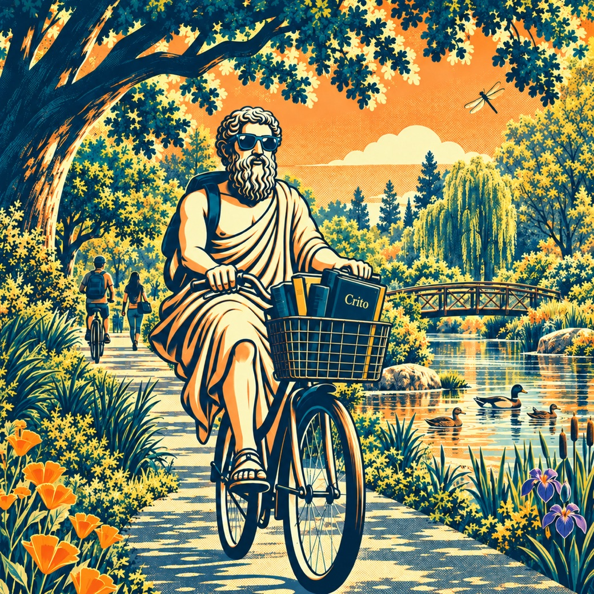

2027 West Coast Plato Workshop
The 20th annual meeting of the WCPW will be held at the University of California, Davis, and will focus on Plato's Crito. The call for abstracts is open below; the full program and logistical details will follow here.

The Meeting
Dates
Friday, May 14 – Sunday, May 16, 2027
Meeting Focus
The workshop will focus on Plato's Crito.
Author Meets Critics
The program will include an author-meets-critics panel on the latest book by Brad Inwood (Yale University), Plato's Crito, in the Cambridge Studies in the Dialogues of Plato series.
Organizers
Carlo DaVia, Jan Szaif, and Carey Seal (University of California, Davis)
Call for Abstracts
If you would like to present something on the Crito, please send a 500-word abstract for blind review to Carlo DaVia (cdavia@ucdavis.edu) by October 16, 2026.
Referees will seek coverage of different parts of, and themes from, the dialogue as they rank the abstracts. Accepted papers will receive commentators.
Serving as a Commentator
If you would like to serve as a commentator, please notify Carlo DaVia (cdavia@ucdavis.edu).
Timeline
-
October 16, 2026
Deadline for submission of abstracts.
-
November 13, 2026
Referee reports due.
-
November 24, 2026
Authors notified.
-
March 1, 2027
Completed papers (around 3,000 words) due to organizers and commentators.
-
May 14–16, 2027
The workshop meets at UC Davis.
How to Get to the Workshop
University of California, Davis
The workshop will be hosted by UC Davis, in Davis, California, at the northern edge of the Central Valley.
Getting Here by Air
Recommended: Sacramento International Airport (SMF) is just 25 minutes from Davis.
Also within reach: the San Francisco Bay Area airports (SFO, OAK, SJC) are farther out but well connected to Davis.
Lodging and Local Tips
Hotel recommendations and local tips will be posted here closer to the meeting.
Questions
We hope to see many of you next year in Davis. For further questions, please contact Carlo DaVia (cdavia@ucdavis.edu), Jan Szaif (jmszaif@ucdavis.edu), or Carey Seal (cseal@ucdavis.edu).
Our thanks to everyone who joined us at Chapman University for the 2026 workshop and three good days with Books VIII and IX of the Republic. You can find that program, and every meeting before it, on the previous meetings page.